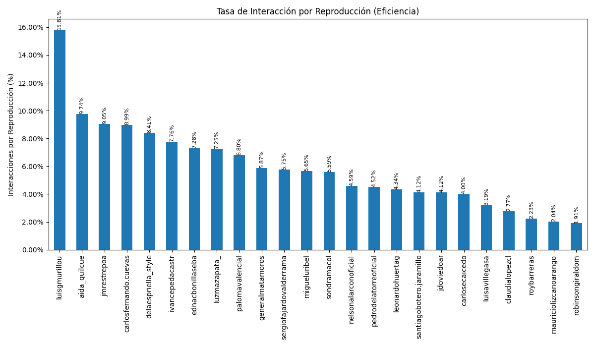
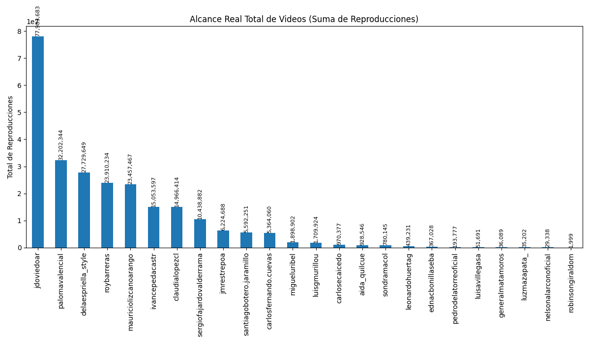
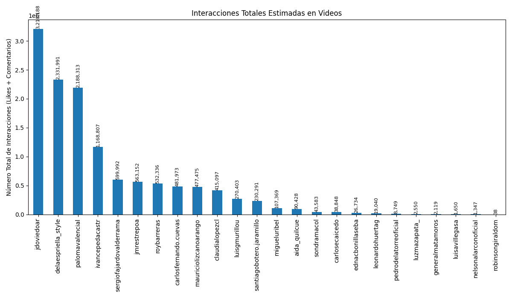

Análisis basado en datos de Instagram en Octubre de 2025



| Candidato | Seguidores | Avg. Engagement Video (Likes) | Avg. Engagement Video (Comentarios) | Avg. Engagement Imagen (Likes) | Avg. Engagement Imagen (Comentarios) | Avg. Engagement Carrusel (Likes) | Avg. Engagement Carrusel (Comentarios) |
|---|---|---|---|---|---|---|---|
| Aida Quilcue | 103,122 | 932.68% | 41.19% | 513.07% | 15.68% | 471.46% | 7.12% |
| Camilo Romero | 186,241 | 939.52% | 47.97% | 241.04% | 8.45% | 286.27% | 7.07% |
| Carlos Caicedo | 63,214 | 373.73% | 26.61% | 70.81% | 5.94% | 96.35% | 7.34% |
| Carlos Fernando Cuevas | 203,412 | 891.63% | 6.89% | 53.48% | 0.05% | 174.38% | 0.46% |
| Claudia Lopez | 1,004,675 | 248.95% | 28.40% | 10.46% | 0.81% | 11.61% | 0.87% |
| Daniel Palacios | 62,694 | 193.04% | 23.72% | 246.10% | 18.00% | 15.85% | 0.32% |
| Abelardo de la Espriella | 971,066 | 790.65% | 50.32% | 321.86% | 12.87% | 264.49% | 8.24% |
| Edna Bonilla | 4,988 | 705.28% | 23.12% | 3402.72% | 105.17% | 693.11% | 17.23% |
| Gustavo Matamoros | 1,860 | 573.13% | 14.05% | 127.64% | 6.85% | 0.00% | 0.00% |
| Ivan Cepeda | 458,362 | 741.67% | 34.76% | 240.00% | 7.33% | 148.19% | 3.19% |
| Juan Daniel Oviedo | 680,974 | 395.31% | 16.34% | 820.05% | 33.54% | 301.57% | 5.08% |
| Jose Manuel Restrepo | 130,328 | 853.30% | 51.41% | 307.47% | 32.52% | 728.67% | 25.69% |
| Leonardo Huerta | 16,657 | 409.72% | 23.78% | 111.42% | 5.62% | 230.87% | 12.82% |
| Luisa Villegas | 640 | 295.27% | 23.96% | 1352.10% | 49.50% | 1489.24% | 210.03% |
| Luis Gilberto Murillo | 78,951 | 1381.86% | 199.51% | 193.82% | 16.89% | 158.10% | 18.45% |
| Luz Maria Zapata | 10,146 | 686.87% | 37.73% | 96.55% | 2.55% | 198.48% | 12.43% |
| Mauricio Lizcano | 68,476 | 166.38% | 37.17% | 36.72% | 2.69% | 112.43% | 5.00% |
| Miguel Uribe Londoño | 134,777 | 528.03% | 37.40% | 628.02% | 16.98% | 625.95% | 18.19% |
| Nelson Alarcón | 1,432 | 451.81% | 7.66% | 374.40% | 8.78% | 319.49% | 7.41% |
| Paloma Valencia | 552,014 | 638.92% | 40.63% | 239.42% | 8.56% | 152.50% | 4.36% |
| Pedro de la Torre | 21,948 | 412.69% | 38.85% | 76.74% | 4.19% | 87.72% | 4.66% |
| Felipe Córdoba | 88,390 | 87.33% | 7.07% | 128.96% | 9.16% | 123.21% | 6.80% |
| Robinson Giraldo | 945 | 149.89% | 41.25% | 127.02% | 37.05% | 74.15% | 84.75% |
| Roy Barreras | 207,593 | 190.08% | 32.56% | 8.52% | 1.43% | 27.82% | 2.95% |
| Santiago Botero | 231,953 | 386.74% | 25.06% | 0.00% | 0.00% | 184.15% | 1.70% |
| Sergio Fajardo | 307,451 | 543.13% | 31.64% | 86.09% | 13.71% | 97.98% | 4.47% |
| Sondra Macollins | 90,486 | 374.41% | 184.26% | 13.30% | 4.76% | 25.24% | 8.63% |
| Candidato | Reporte Detallado |
|---|---|
| Abelardo de la Espriella | Ver Análisis |
| Claudia Lopez | Ver Análisis |
| Ivan Cepeda | Ver Análisis |
| Luis Gilberto Murillo | Ver Análisis |
| Mauricio Lizcano | Ver Análisis |
| Paloma Valencia | Ver Análisis |
| Roy Barreras | Ver Análisis |
| Santiago Botero | Ver Análisis |
| Sergio Fajardo | Ver Análisis |
| Sondra Macollins | Ver Análisis |
| Miguel Uribe Londoño | Ver Análisis |
| Aida Quilcue | Ver Análisis |
| Juan Daniel Oviedo | Ver Análisis |
| Jose Manuel Restrepo | Ver Análisis |
| Edna Bonilla | Ver Análisis |
| Leonardo Huerta | Ver Análisis |
| Carlos Fernando Cuevas | Ver Análisis |
| Luisa Villegas | Ver Análisis |
| Luz Maria Zapata | Ver Análisis |
| Gustavo Matamoros | Ver Análisis |
| Robinson Giraldo | Ver Análisis |
| Carlos Caicedo | Ver Análisis |
| Nelson Alarcón | Ver Análisis |
| Pedro de la Torre | Ver Análisis |